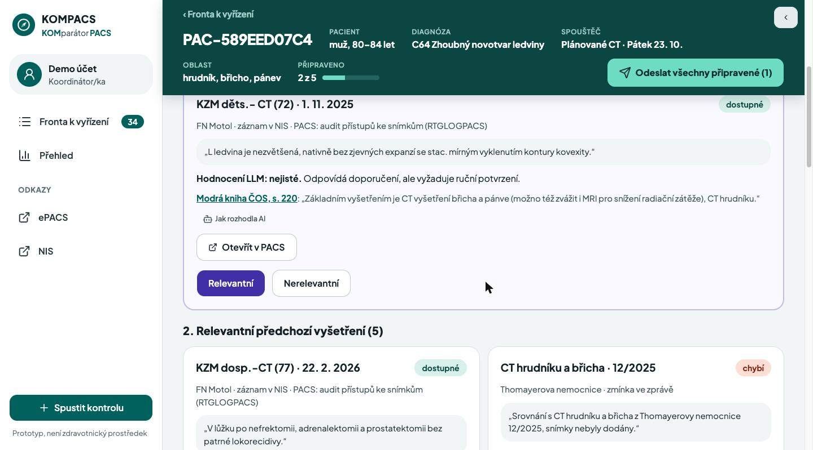
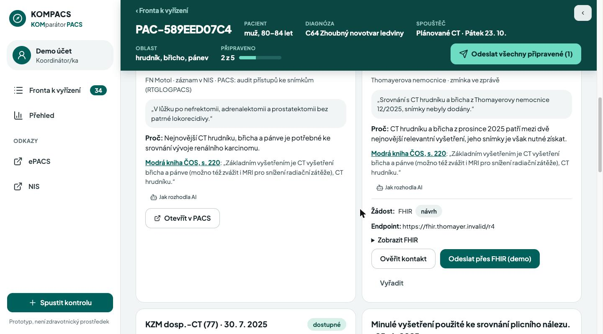

Žádné vyšetření bez srovnání.No exam without a comparison.
Před CT, MR, PET nebo MDT najde relevantní předchozí vyšetření, ověří je v PACS a vyžádá to, co chybí. Before a CT, MRI, PET or tumor board, KOMPACS finds the relevant prior exams, checks them in PACS and requests what is missing.
Hledám předchozí vyšetření…Searching prior exams… ● Nalezeno ve zprávě, chybí v PACSFound in a report, missing in PACS Žádost odeslána → dostupné v PACSRequest sent → available in PACS

Chybí starý snímek. Případ se odloží, sestra visí na telefonu.An old scan is missing. The case waits, a nurse hangs on the phone.
- 1Pacient přijde na CT nebo na MDT. Starší snímky pro srovnání nejsou v PACS.The patient arrives for a CT or a tumor board. The older scans for comparison are not in PACS.
- 2Kde vznikly, je často jen ve větě v lékařské zprávě. Hledání v NIS ani v PACS je nenajde.Where they were done is often only a sentence in a report. A NIS or PACS search does not find them.
- 3Lékař případ odloží. Sestra obvolává nemocnice. Pacient čeká, nebo jde na vyšetření znovu.The physician postpones the case. A nurse calls other hospitals. The patient waits, or gets scanned again.
případů v našich demo datech nemá předchozí vyšetření, které lékař potřebuje. Všech 34 chybějících je zmíněno jen v textu zpráv.cases in our demo data lack a prior exam the physician needs. All 34 missing priors are named only in report text.
Radiologové milují v životě dvě věci: tmu a kompletní data pacientů. Bohužel, náš systém jim většinou dopřeje jen tu tmu.
Radiologists love two things in life: darkness and complete patient data. Sadly, our system mostly gives them only the darkness.
Kontrola předchozích vyšetření spustí se sama, ve chvíli objednávky.The prior-exam check runs by itself, the moment an exam is ordered.
Funkční koordinátorský dashboard, AI model pro analýzu textu zpráv a interaktivní časová osa pacienta. Systém průběžně porovnává žádanky s historií a hledá, co chybí před CT plic nebo před onkologickým MDT.A working coordinator dashboard, an AI model that reads report text, and an interactive patient timeline. The system continuously compares orders with the history and finds what is missing before a lung CT or an oncology tumor board.
Relevantní / nerelevantní / nejisté. S důvodem, větou ze zprávy a citací Modré knihy ČOS.
Relevant / not relevant / uncertain. With a reason, the source sentence and a Modrá kniha (Czech oncology guideline) citation.
Rozhodne nejisté, schválí žádost jedním klikem.
Decides the uncertain ones, approves the request in one click.
Snímky dorazí, stav se sám přepne na „dostupné“.
Images arrive, the status turns “available” by itself.
AI, která cituje zdrojAI that cites its source
Model posoudí všechna kandidátní vyšetření případu najednou. Každé hodnocení má důvod, větu ze zprávy a citaci z Modré knihy ČOS se stránkou. Citaci systém ověřuje. Když si model není jistý, rozhoduje člověk.
The model judges all candidate priors of a case at once. Each verdict has a reason, the source sentence and a page-linked Modrá kniha citation. The system verifies the citation. When the model is unsure, a human decides.
- Data pacientů jdou jen do modelu v EU Data Zone
- Patient data goes only to an EU Data Zone model
- Historie hodnocení, jde vrátit a posoudit znovu
- Verdict history, re-judge or roll back

Pacienti často zapomínají. Pojišťovna ale nikdy nezapomene, co komu zaplatila.
Patients often forget. The insurer never forgets what it paid for.
Data pojišťovny: z vykázané péče zjistíme, že pacient měl CT břicha před půl rokem jinde, i když si to sám nepamatuje. V prototypu je pojišťovna simulovaný FHIR server. Napojení na data VZP: cílově od 1. 1. 2028 (konzultováno se zástupcem VZP). Insurer data: billing history shows the patient had an abdominal CT elsewhere six months ago, even if they do not remember. In the prototype the insurer is a simulated FHIR server. Connection to VZP data: target 2028-01-01 (consulted with a VZP representative).
Žádní AI roboti na telefonu. Přesný e-mail na jedno kliknutí.No AI robots on the phone. A precise e-mail in one click.
Systém vybere kanál sám: e-mail, telefon, nebo FHIR, když má nemocnice FHIR adresu. Kontakt navrhne z adresáře ePACS. Koordinátor/ka ho ověří a uloží. Nic neodejde bez člověka.
The system picks the channel: e-mail, phone, or FHIR when the hospital has a FHIR endpoint. It suggests the contact from the ePACS directory. The coordinator verifies and saves it. Nothing leaves without a human.
Dobrý den, pro plánované CT dne 23. 10. žádáme o zaslání snímků a popisu CT hrudníku a břicha z 12/2025 přes ePACS. Pacient: PAC-DEMO-001. Děkujeme.
Hello, for a CT planned on 23 Oct we kindly ask for the images and report of the chest and abdomen CT from 12/2025 via ePACS. Patient: PAC-DEMO-001. Thank you.
Představa, že se naše AI dovolá vrátnému a odrecituje mu rodné číslo a onkologickou diagnózu, je sice úsměvná, ale váš GDPR pověřenec by z toho měl infarkt.
Picture our AI reaching the hospital porter and reciting a birth number and a cancer diagnosis. Funny, yes. But your data protection officer would have a heart attack.
InterSystems IRIS for Health
Objednávky přicházejí jako HL7 v2, IRIS je převede na FHIR R4. PACS feed, vektorové hledání ve zprávách a v Modré knize, vše v IRIS.
Orders arrive as HL7 v2, IRIS converts them to FHIR R4. PACS feed, vector search over reports and the guideline, all inside IRIS.
Data zůstávají v EUData stays in the EU
Text zpráv jde jen do modelu v EU Data Zone. Vyhledávání podle významu běží na lokálním modelu. Každé hodnocení AI je dohledatelné.
Report text goes only to an EU Data Zone model. Semantic search runs on a local model. Every AI verdict is traceable.
Připraveno na FHIR a MCPReady for FHIR and MCP
Souhrn případu je FHIR dokument s historií verzí. MCP server: libovolný AI agent se zeptá „které snímky chybí a proč“.
The case summary is a versioned FHIR document. An MCP server lets any AI agent ask “which priors are missing and why”.
Celá historie pacienta na jedné ose. Červená vlajka, když chybí kritický snímek.The whole patient history on one timeline. A red flag when a critical scan is missing.
Interaktivní časová osaInteractive timeline
Zobrazování, zprávy, léčba, laboratoř. Hledání podle významu: „metastázy v plicích“ najde i věty jinými slovy.
Imaging, reports, treatment, labs. Semantic search: “lung metastases” also finds sentences in other words.
2D anatomická mapa2D anatomical map
Na siluetě pacienta se rozsvítí jen oblasti, kde už prokazatelně proběhlo obrazové vyšetření. Chybí-li kritický snímek, svítí červeně.
The patient silhouette lights up only where imaging is proven to exist. A missing critical scan shows in red.
Fronta, žádosti, urgenceQueue, requests, follow-ups
Kalendář plánovaných vyšetření a MDT. U každého případu: co rozhodnout, co chybí, co čeká. Upozornění na duplicitu, když se stejné vyšetření opakuje do 6 týdnů.
A calendar of planned exams and tumor boards. Per case: what to decide, what is missing, what is pending. A duplicate alert when the same exam repeats within 6 weeks.
- Stav žádosti: návrh → odesláno → doručeno
- Request status: draft → sent → delivered
- Nedoručeno po 2 pracovních dnech → urgovat
- Not delivered after 2 working days → follow up

Není vázaný na jednu nemocnici.Not tied to one hospital.
Díky datům pojišťovny a standardu FHIR jde KOMPACS nasadit v jakémkoliv zařízení v republice. Nemocnice nic nemění, připojí co má: HL7 objednávky, FHIR, PACS feed.With insurer data and the FHIR standard, KOMPACS can run in any facility in the country. The hospital changes nothing. It connects what it has: HL7 orders, FHIR, a PACS feed.
Jeden balík na nemocniciOne stack per hospital
On-prem nebo EU cloud. Distribuci a podporu zajistí český IT integrátor.
On-prem or EU cloud. A Czech IT integrator distributes and supports it.
Centrálně bez dat pacientůCentral, no patient data
Adresář ověřených kontaktů a dotaz na pojišťovnu. Data pacientů zůstávají v nemocnici.
The verified-contact directory and the insurer lookup. Patient data stays in the hospital.
Funguje už dnesWorks today
Sdílení snímků přes evropský EHDS má platit až od roku 2031. KOMPACS zlepší současný stav hned.
Image exchange under the European EHDS is due only in 2031. KOMPACS improves today's state now.
Méně duplicitních vyšetření. Kratší čekání. Méně záření.Fewer duplicate exams. Shorter waits. Less radiation.
Šetříme peníze nemocnicím i pojišťovně. Zkracujeme čekání na diagnózu. A chráníme onkologické pacienty před zbytečným zářením.We save money for hospitals and the insurer. We shorten the wait for a diagnosis. And we protect cancer patients from needless radiation.
chybějících relevantních vyšetření nalezeno ve 40 demo případech
missing relevant priors found in 40 demo cases
případů by lékař začal bez potřebného srovnání
of cases would start without a needed comparison
kontrola 40 případů: 15 min → 3 min na případ
checking 40 cases: 15 min → 3 min per case
odhadestimatetelefonátů nahradí připravená žádost
phone calls replaced by a ready request
odhadestimateTohle pro nás není jen víkendový hackathon.For us, this is not just a weekend hackathon.
Jsme motivovaní dotáhnout KOMPACS do reálného nasazení.We are motivated to take KOMPACS into real use.
Skutečné objednávky, klinické potvrzení pravidel AI.
Real orders, clinical sign-off of the AI rules.
Druhé pracoviště, napojení na ePACS.
Second site, connection to ePACS.
Cílově od 1. 1. 2028. Vyšetření, o kterých žádná jedna nemocnice neví.
Target 2028-01-01. Exams no single hospital knows about.
Ozvěte se nám.Get in touch.
Adam Karas
medik, product ownermedical student, product owner